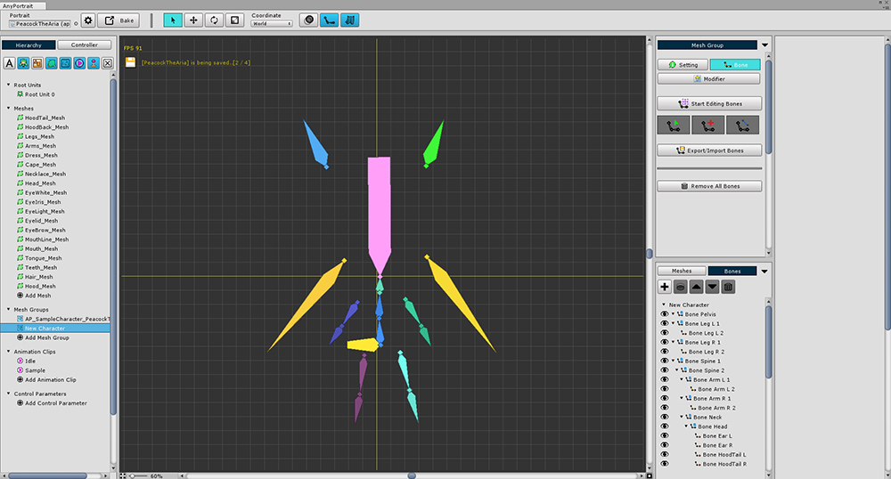

AnyPortrait > 메뉴얼 > 본 설정을 파일로 내보내기/가져오기
본 설정을 파일로 내보내기/가져오기
1.0.0
본 설정을 파일로 내보내기

(1) 메시 그룹의 Bone 탭에서 (2) Export/Import Bones 버튼을 누릅니다.

(3) Export 버튼을 눌러서 본 설정을 파일로 저장합니다.
본 설정을 파일에서 가져오기

본 설정을 가져올 새로운 메시 그룹을 준비합니다.
다른 apPortrait여도 가능합니다.

(1) Bone 탭을 선택합니다.
(2) Export/Import Bones 버튼을 눌러서
(3) Load File 버튼을 누른 뒤,
(4) 저장했던 파일을 엽니다.

1. Export : 파일로 저장
2. Load File : 파일을 열어서 가져오기 준비
3. Bone Name : 파일에 저장된 본 이름들
4. Import : 해당 본을 가져올지 여부
5. IK : 해당 본의 IK 설정을 가져올지 여부
6. Shape : 해당 본의 출력 형태(Shape)를 가져올지 여부
7. Enable/Disable : 전체 본을 대상으로 선택 또는 해제
8. Import Scale : 저장된 데이터를 리사이즈하는 비율
9. Import 버튼 : 본 데이터를 메시 그룹으로 가져오기

위 화면과 같이 본 데이터를 파일로부터 가져올 수 있습니다.


위와 같이 일부 본을 제외하거나 형태 (Shape)를 가져오기에서 제외하는 것도 가능합니다.